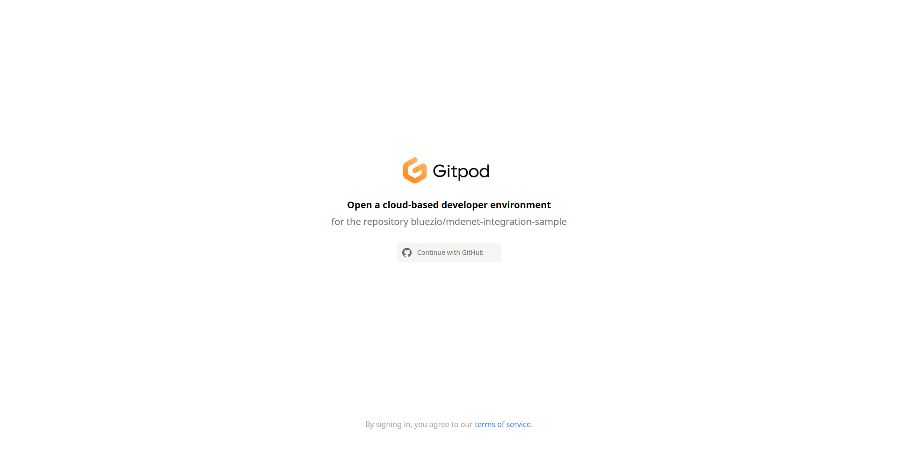
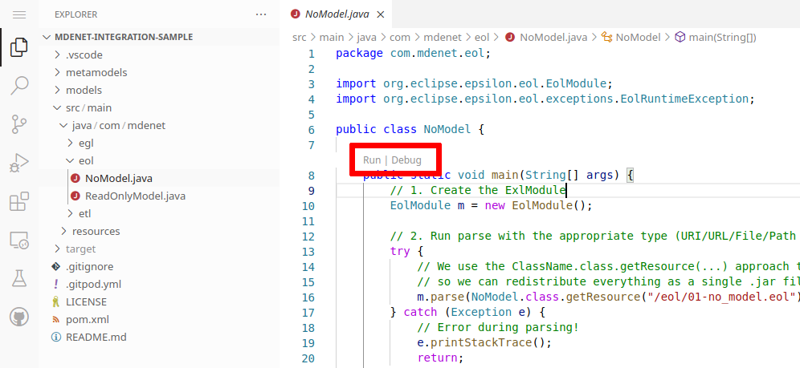
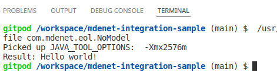
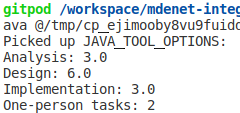
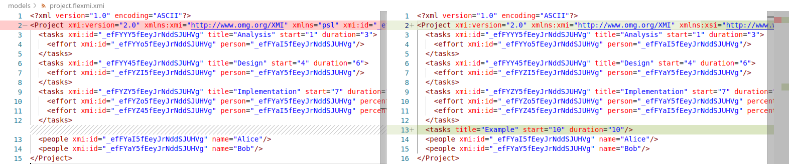

Antonio Garcia-Dominguez
March 3, 2022
EolModuleEtlModuleEglTemplateFactoryModuleAdapterClass)We will focus on this subset of Epsilon:


NoModel.java on the leftpom.xml)-SNAPSHOT), to avoid a warning message when using EGL<dependencyManagement> to ensure we use modern Eclipse core JARs:
<dependency>
<groupId>org.eclipse.epsilon</groupId>
<artifactId>org.eclipse.epsilon.eol.engine</artifactId>
<version>${epsilon.version}</version>
</dependency>epsilon.version property ensures the Epsilon JARs match each otherNoModel.javaEolModule.parse() while passing the reference to the script location: in this case, we package the script with our application, but it could be an external file.execute() to obtain the result (in case the last statement is a return)public static void main, and watch the terminal
Picked up part: it’s Gitpod-specific<dependency>
<groupId>org.eclipse.epsilon</groupId>
<artifactId>org.eclipse.epsilon.emc.emf</artifactId>
<version>${epsilon.version}</version>
</dependency>EmfModel<dependency>
<groupId>org.eclipse.epsilon</groupId>
<artifactId>org.eclipse.epsilon.flexmi</artifactId>
<version>${epsilon.version}</version>
</dependency>.flexmi support to EMF<dependency>
<groupId>org.eclipse.emfatic</groupId>
<artifactId>org.eclipse.emfatic.core</artifactId>
<version>1.0.0</version>
</dependency>.emf support to EMFfinal var emap = Resource.Factory.Registry.INSTANCE.getExtensionToFactoryMap();
emap.put("flexmi", new FlexmiResourceFactory());
emap.put("emf", new EmfaticResourceFactory());.flexmi and .emf file extensions (on top of the default .xmi one)true iff model is an input to the current tasktrue iff model is an output of the current taskm.load()EolModule variable go out of scope is not enough to free its resources (as in C++)dispose() the model repository once a model is done running:
setStoredOnDisposal(true)Running ReadOnlyModel will produce the same output as in the Playground:

returnReadOnlyModel called WriteModel that:
03-add_task.eol insteadmodels/project.flexmi.xmi

.execute() call, importing execute.context.VariableWriteModel: you should see a new task with the specified durationAntonio Garcia-Dominguez
a.garcia-dominguez AT aston.ac.uk